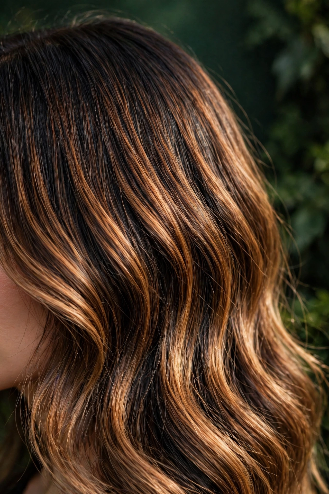
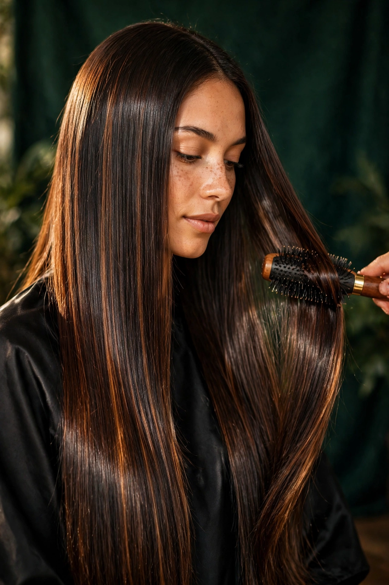
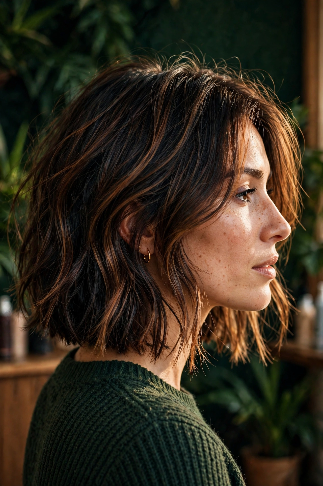
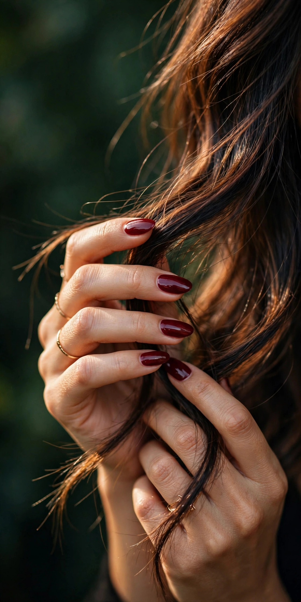
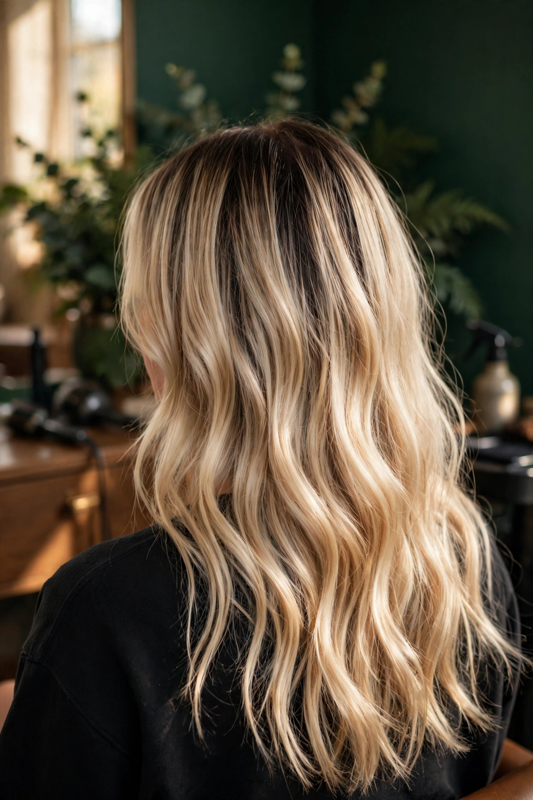
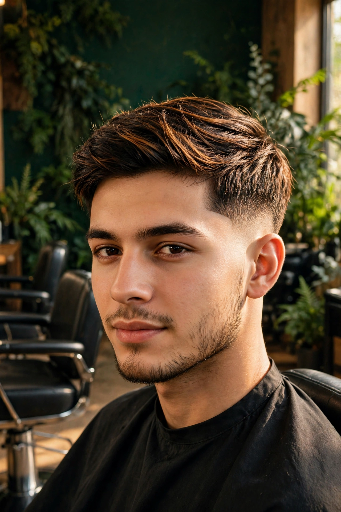
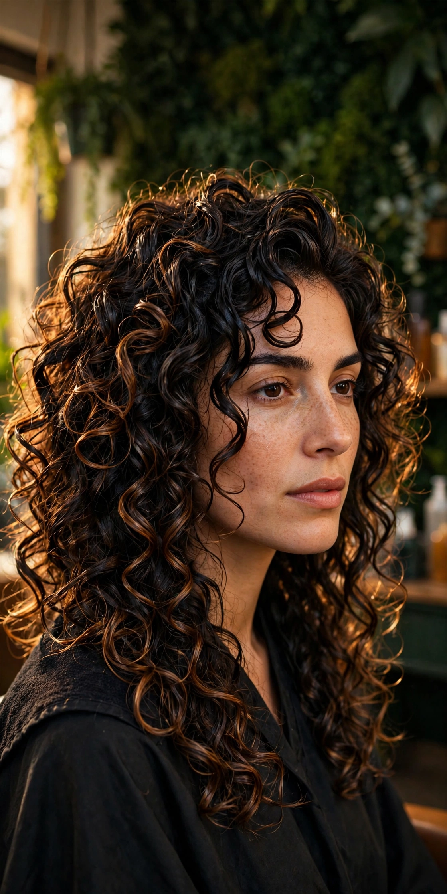
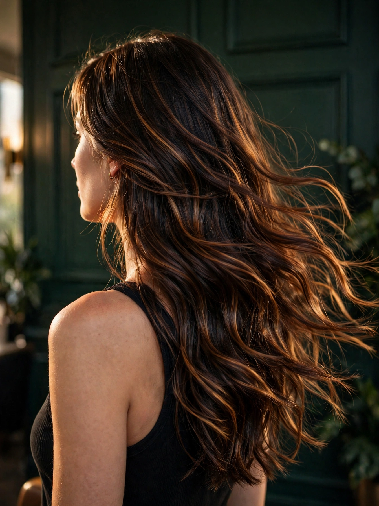

ColoraçãoTendência
Morena iluminada caramelo quente
Degradê suave e sem marcas que preserva a estrutura capilar. Tons quentes de mel e avelã criando dimensão e movimento.
Sem danos térmicos • ~3h30
Quero esse →Amostras técnicas selecionadas
Fotografias e registros do dia a dia no salão em Campinas. Cabelos saudáveis, acabamentos impecáveis e técnica limpa em cada trabalho.
Fotos ilustrativas de amostra técnica — trabalhos executados no salão. Cada fibra capilar reage de forma diferente; o resultado final depende do histórico e da saúde do seu fio, avaliados no diagnóstico.
8 trabalhos exibidos

Degradê suave e sem marcas que preserva a estrutura capilar. Tons quentes de mel e avelã criando dimensão e movimento.
Sem danos térmicos • ~3h30
Quero esse →
Alinhamento biológico de cutículas sem rigidez artificial. Brilho espelhado extremo com movimento fluido e natural.
Blindagem anti-umidade • ~2h30
Quero esse →
Geometria adaptada ao contorno da mandíbula com desfiado interno para conceder movimento sem esvaziar o comprimento.
Design personalizado • ~1h15
Quero esse →
Remoção milimétrica contínua e esmaltação uniforme com selagem de pontas para um acabamento duradouro.
Material esterilizado • ~50 min
Quero esse →
Descoloração com proteção lipídica para atingir um loiro luminoso mantendo a elasticidade. Raiz difusa que cresce sem marcação.
Plex reconstrutor • ~4h30
Quero esse →
Transição homogênea da lâmina zero até o topo com finalização a seco. Perfil alinhado com simetria e acabamento limpo.
Alinhamento preciso • ~45 min
Quero esse →
Transformação com reposição de massa lipídica integrada. O cabelo ganha balanço, maleabilidade e sedosidade.
Fórmula nutritiva • ~3h00
Quero esse →Paleta quente equilibrada com micropintura e blindagem em gel, ideal para um visual executivo refinado.
Design exclusivo • ~1h00
Quero esse →Protocolo de diagnóstico
Nenhuma mecha é exposta a descoloração ou química de transformação sem uma verificação prévia da saúde e da resistência do fio.
Como alcançar seu objetivo
Cada foto em nossa galeria representa um plano de tratamento: da higienização ao selamento final, tudo pensado para o seu fio.
Aferição de histórico de alisamentos, porosidade e tônus para determinar limites seguros.
Execução técnica com visagismo prático para valorizar seu formato facial e rotina.
Você sai do salão sabendo exatamente o cronograma certo de lavagem, calor e manutenção.
Registro técnico
